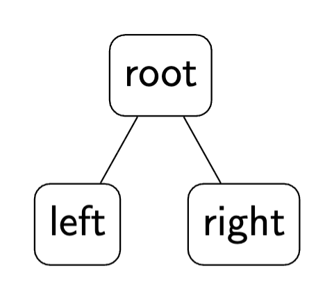

Introduction to Data Structure and Algorithm I
Liting Zhang
University of West Florida
Course Policies and Logistics
Course and Instructor Information
Class schedule: T, R 4 - 5:15 AM
Meets: 4/248
Instructor: Liting Zhang, PhD
-
Office Hours:
Office: 4/435
Tue and Thurs: 3 - 4 pm
Email: lzhang@uwf.edu
Communication Policy
Course information and updates are sent via Canvas announcements
Email is the preferred method of communication
Use subject line format:
COP3530: [Your Topic Here]Example:
COP3530: Project 2 QuestionsExpect a response within 1–2 business days
-
Avoid:
Canvas/Navigation messages
Sending only error screenshots without your code/context
Important Note
This is a programming-intensive course.
-
It does not get easier as the semester goes on:
you will read code, debug, and write substantial programs
-
This is not self-paced:
complete assignments and programs by the posted deadlines
Course Objectives
Develop solutions by applying presented algorithms
Write algorithms for solving problems prior to coding
Analyze solutions in terms of time and space complexity
Develop programs that utilize different types of data structures
Write recursive definitions and develop recursive programming solutions
Textbook Info (zyBooks)
Go to zyBooks website and create a new account
Enter zyBook code:
UWFCOP3530ZhangFall2026Subscribe
Participation activities: do before/during reading
Challenges: do after covered in lecture
Grading: finish > 80% for full credit; graded after due date; counts toward final grade
Attendance Policy
Regular attendance is expected and will greatly improve performance
Attendance is not taken and not part of your grade
In-class activities are graded (lowest two will be dropped)
Grading / Evaluation
| Assignment | % of Grade |
|---|---|
| Checkpoints | 10% |
| Projects | 25% |
| Tests | 25% |
| Final Exam | 20% |
| zyBooks Activities | 10% |
| Classroom Activities | 10% |
Assessments
-
Checkpoints:
2 mini programming assignments (GitHub Classroom)
about 2 weeks to finish
-
Projects:
3 programming assignments (GitHub Classroom)
about 3 weeks to finish
-
Exams:
2 tests (around week 6 and week 11)
1 comprehensive final exam
Respondus LockDown Browser required
-
Activities:
zyBooks activities
classroom activities
short review quiz for previous class
Late Policy
In-class activities: no late submissions
zyBooks: due as shown in Canvas; no late submissions
-
Checkpoints/Projects:
accepted up to 48 hours after deadline; after that, 0 without approved extension
no late submission for the last project
-
penalty (applied once to earned score):
\(\le\) 24 hours late: \(-10\%\)
24–48 hours late: \(-20\%\)
extension: request before the deadline when possible
Excused Absences Policy
-
Accepted reasons (with documentation):
illness, family death/crisis
military/jury duty, religious holy days
official University events
serious illness of dependent children
Notify instructor ASAP for any excused absence affecting graded work
-
Make-up tests:
allowed with medical notice or approved emergency
non-medical/emergency reasons require advance approval
if absent without prior approval, notify within 48 hours
make up within 2 weeks (unless long-term illness)
Development Environment for C++
Development Environment for C++
Minimal requirements
Toolchain and environment
Command-line environment (bash)
-
Local development environment
Linux native
Windows WSL (Linux CLI)
Mac OS native
-
Remote development environment (optional)
SSH server (Linux CLI)
GitHub Codespaces (Web IDE + Linux VM)
-
Traps and pitfalls
MinGW / MSYS2 / Git Bash
click-and-run single-file workflows
Minimal Requirements for C++ Development
-
An editor/IDE to edit source code files
Visual Studio Code (recommended)
-
A build environment to compile source files into executables/libraries
access through a command-line interface (CLI), usually bash
core software:
g++,make,git,valgrind
Other bash tools may be useful (zip, tar, grep, etc.)
Windows Users (Suggested Workflow)
NEVER put your project in OneDrive folder
NEVER put your project under a directory containing spaces in its name
AVOID MinGW/MSYS2/Git Bash
Pay attention to line endings for files obtained from Windows apps
-
NEVER download and unzip from GitHub
use
git cloneinstead (zip tools often mess up line endings)
Tools and Environment
-
makeautomate the build process and manage dependencies
read more about make
-
gitdistributed version control for text files (source code)
we use a small subset as beginners
backup versions of your work; submit your work
read more about git
Command-Line Interface (CLI)
Command-line interface (CLI): text-based interface to interact with the computer
Shell: interprets commands
Terminal: displays input/output
Counterpart of GUI (graphical user interface)
-
Why CLI:
Flexible: adjust parameters on the fly
Easy-to-use: easily automated even when complicated
Portable: same commands across platforms
Efficient: less resource consumption
Problems with GUI
GUI is great, but not suitable to our needs
Hard to automate
Hard to learn well for modular projects + build systems
Local Environment
A local development environment is recommended for this course
Not always the most convenient, but worth your time to learn
Local Environment: Linux machine
Install
g++andmakeusing your package manager (Ubuntu example):
sudo apt update
sudo apt install build-essential
# optional but recommended:
sudo apt install valgrindFor other distributions, use the appropriate package manager.
Local Environment: Windows (WSL)
Install Ubuntu 20.04 LTS from Microsoft Store (WSL)
Toolchain setup is similar to Linux
sudo apt update
sudo apt install build-essential
# optional but recommended:
sudo apt install valgrindInstall Visual Studio Code
Install WSL Extension in VS Code
Local Environment: Mac OS
Install Xcode Command Line Tools
xcode-select --installNote:
valgrindis not directly available on Mac OS
Remote Environment
Remote environment: use a remote computer to do development
-
SSH server (from CS department):
C++ toolchain pre-installed
handle files remotely
best with VS Code in SSH remote mode
-
GitHub Codespaces:
in-browser VS Code + Linux virtual machine
free hours for GitHub Classroom
Traps and Pitfalls
-
MinGW/MSYS2/Git Bash:
Windows port of g++ toolchain
g++ under MinGW may not match Linux behavior
compatibility issues with make
not recommended for this course
-
Click-and-run features:
tricky to configure for modular projects with make
command line is usually better
Examples: jGrasp, “Run and Debug” button in VS Code, OnlineGDB, Eclipse
GitHub Classroom Workflow
GitHub and GitHub Classroom: why we use them
Git is version control: track changes, revert mistakes, collaborate
GitHub hosts git repositories online (backup + sharing)
GitHub Classroom distributes assignments as private repos
You submit by pushing commits (no file uploads, no zip submissions)
Key idea: repository = your assignment folder
Each assignment link creates a private repository for you
-
You clone it once, then:
edit code locally
commit changes
push to GitHub (this is the submission)
Your repo keeps history: you can see what changed and when
Vocabulary you must know
repo (repository): project folder tracked by git
clone: download a repo to your machine (first time)
commit: save a checkpoint with a message
push: upload commits to GitHub (submission happens here)
pull: download updates from GitHub (rare for assignments)
origin: default remote repo on GitHub
Workflow overview (every assignment)
Accept assignment link (GitHub Classroom)
Clone repository to your machine (once)
Edit and test locally
Commit frequently with clear messages
Push to GitHub before the deadline
Step 1: accept assignment + clone
After accepting the lab1 link, copy the repo URL, then:
# choose a folder where you store class work
mkdir -p ~/Desktop/cop3530
cd ~/Desktop/cop3530
# clone your private assignment repository
git clone your_private_git_repo_link
cd assignment-1-yournameDo not download ZIP files from GitHub.
Clone once; after that you just work inside the folder.
Step 2: edit, build, run
Typical local cycle:
# see what files exist
ls
# edit main.cpp
# build (example)
make
# run (example)
./mainAlways make sure your code compiles and runs before you push.
Step 3: check status + add files
# see what changed
git status
# stage changes (most common)
git add .
# or stage a specific file
git add main.cppgit statustells you exactly what will be committed.git add .stages all changes in the repo folder.
Step 4: commit with a message
git commit -m "Implement insert() and fix edge cases"Good commit messages:
describe what changed (and why, if needed)
are short and specific
happen often (small checkpoints)
Step 5: push (this is submission)
git pushIf this command succeeds, your code is on GitHub.
GitHub Classroom autograding (if enabled) runs after pushes.
Always push before the deadline.
How to confirm your submission
Open your assignment repo on GitHub
Check the README grade badge
-
View grading detail
On your GitHub repo page, click the Actions tab to see your graded results.
If it isn't a green check mark √ path, then at least part of the testing failed.
Click the commit message for the failing version then click “Autograding” on the left side of the page.
Follow the X path and expand things to see what errors exist.
It is usually
education/autograding@v1and you can expand this path to view the detail.
Common mistakes (avoid these)
Editing files outside the repo folder (then nothing gets committed)
Forgetting
git add(commit contains no changes)Forgetting
git push(GitHub does not receive your commits)Downloading ZIP from GitHub (breaks workflow + line endings)
Working in OneDrive / folders with spaces (Windows issues)
When things go wrong: quick fixes
-
“I committed but GitHub doesn't update”:
git push -
“Nothing to commit, but I changed files”:
git status git add . git commit -m "Update solution" -
“Merge / pull issues” (rare for assignments):
ask instructor/TA before force commands
Recommended habit: commit early, commit often
Treat commits like save points
-
Make a commit when you:
pass a test
finish a function
fix a bug
If something breaks, you can go back to a working commit
Comment and Documentation
-
Comment
audience: the programmer themselves
used to explain code to yourself/other programmers
often replaceable by good names and good structure
-
Documentation
audience: users of the code (including future you)
explains behavior, contracts, parameters, edge cases
always useful
Comment vs Documentation (examples)
// initialize the array (often replaceable by a good function name)
for (int i = 0; i < 10; ++i) {
a[i] = 0;
}
// print the array
for (int i = 0; i < 10; ++i) {
std::cout << a[i] << std::endl;
}/**
* @brief Initialize an array to all zeros.
* @param a The array to initialize.
* @param n The number of elements in the array.
*/
void initializeArray(int a[], int n);
void initializeArray(int a[], int n) {
for (int i = 0; i < n; ++i) {
a[i] = 0;
}
}Errors and Debugging Basics
Types of Errors in C++
Syntax error
Runtime error
Logic error
Syntax Error
Compilation error: compiler cannot understand your code
Reading error messages helps, but can be non-trivial at first
A good editor/IDE can highlight syntax errors (may require configuration)
Runtime Error
Related concept: exceptions
Compiler understands your code, but the program fails while running
Symptoms: crash, segmentation fault, freeze, etc.
Logic Error
Program compiles and runs, but does not do what you want
-
Problems it causes:
wrong output / wrong behavior
wasted resources (too slow; too much memory; possible memory leak)
Often the most difficult type of error to debug
Introduction to Data Structures and Algorithms
Overview
Data structure
Introduction to algorithms
Relation between data structure and algorithms
Abstract data types
Applications of ADTs
Data Structures
A data structure is a way of organizing, storing, and performing operations on data.
Data structures: four common examples
Record: group related fields (e.g., Student: id, name, age)
Array: contiguous sequence (e.g., test scores)
Linked list: nodes connected by pointers (e.g., train cars)
Binary tree: hierarchical structure (e.g., directory tree)
Example: Record and Array
Record (Student)
id: 1234567
name: Alice
age: 20
Why it helps: keeps related data together.
Array (Scores)
contiguous memory
constant-time indexing
| 78 | 90 | 92 | 100 | 85 | 88 |
Example: Linked list and Binary tree
Linked list
nodes store data + link to next
flexible insert/remove
Binary tree
hierarchical relationships
supports efficient search (when structured)

Algorithms
An algorithm is a step-by-step process to solve a problem.
Input \(\rightarrow\) process \(\rightarrow\) output
Same problem can have many algorithms with different efficiency.
Algorithms + data structures: together
Data structure organizes data; algorithm uses that organization.
-
Examples:
Searching a sorted array: binary search
Navigation / shortest path: Dijkstra's algorithm on a graph
Example problem: find maximum value
Problem: given an array of numbers, return the maximum element.
Idea: scan from left to right while tracking the best so far.
Why this matters:
establishes a baseline linear-time algorithm: \(O(n)\)
helps compare to slower approaches (e.g., nested loops)
Find maximum (C++ example)
int maxValue(const int a[], int n) {
int best = a[0];
for (int i = 1; i < n; ++i) {
if (a[i] > best) best = a[i];
}
return best;
}Runs in \(O(n)\) time and \(O(1)\) extra space.
Practical Applications of Algorithms
Searching (databases, files, websites)
Sorting (ranking, reporting, preprocessing)
Graph algorithms (routing, networks, recommendations)
Compression and hashing (storage, security, performance)
Optimization (scheduling, planning, resource allocation)
Example Computational Problems
Find an item quickly in a large dataset
Plan the shortest/cheapest route between locations
Schedule tasks with priorities and deadlines
Match or recommend items based on similarity
Detect duplicates, anomalies, or patterns
Efficient Algorithms and Hard Problems
Efficient algorithms: runtime increases no more than polynomially with input size
Some problems lack known efficient algorithms \(\rightarrow\) NP-complete problems
-
NP-complete problem characteristics:
no efficient algorithm found
no proof that an efficient algorithm is impossible
if one NP-complete problem is solved efficiently, all can be
-
Strategy:
focus on finding good (not necessarily optimal) solutions
Abstract Data Types (ADTs)
Abstract Data Types (ADTs)
An ADT specifies what operations are supported (behavior), not how they are implemented.
Focus: interface, contracts, and expected behavior.
Multiple implementations can satisfy the same ADT.
Common ADTs
List
Stack
Queue / Deque
Priority queue
Set / Map (dictionary)
Graph
Application of ADTs
-
Choose an ADT based on what operations you need:
stack: last-in-first-out
queue: first-in-first-out
map: key \(\rightarrow\) value lookup
priority queue: always remove highest priority
-
Then choose an implementation based on performance goals:
array vs linked list
binary heap vs balanced tree
hash table vs tree-based map
ADTs in Standard Libraries
-
C++ STL examples:
std::vector(dynamic array)std::list(doubly linked list)std::stack,std::queue,std::priority_queuestd::map,std::unordered_mapstd::set,std::unordered_set
These are implementations that provide ADT-like interfaces
Review
Summary
Policies + workflow matter: they prevent avoidable problems
CLI + Linux toolchain is the most reliable setup for this course
Classify errors first (syntax/runtime/logic), then debug efficiently
Data structures organize data; algorithms solve problems using that organization
ADTs describe behavior; implementations determine performance